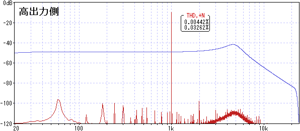

ギター音再現機（Guitar Sound Reproducer）
2023年03月15日 カテゴリー：自作エフェクター（アナログ）
ファズは入力インピーダンスが低いものが多く、ギターを直結した場合とバッファーを通して接続した場合で音が違います。音質を比較する際は再現性のあるギター出力が必要と考え、以前作った「擬似ギター出力」を改良したものを製作しました。本機に録音したギター音源を入力し、ピックアップから実際にギターを弾いた時とほぼ同じ状態の音を出力させます。出力のピックアップはCustom Shop Twisted Tele Pickupのブリッジ側です。
最初はピックアップを使わずに、シミュレーテッドインダクタ（ジャイレータ）を検討しました。Floating Inductorsにある回路を組んでみましたが、思うような特性が得られませんでした。うまくいけば簡単にピックアップの特性がシミュレートできるのですが、やはり実際にピックアップを使った方が説得力がある気がします。
そして参考にしたのはピックアップの特性測定に関する下記ページです。ピックアップに磁束を与える、ドライバーコイルと呼ばれる空芯コイルを使うこと、インテグレータという高音域が下がる特性（-6dB/octave）の装置を使うこと等が記載してあります。
・Measuring the Electrical Properties of Guitar Pickups
Integrator（積分器）はローパスフィルタ（LPF）と同じ働きのため、以下ではLPFと記載します。
ドライバーコイルはいろいろと検討しましたが、外径0.16mmの2UEWポリウレタン銅線を70回程度巻き、ホットボンドで固めたものを使いました。
抵抗値は6Ω程度、インダクタンスは約200uHです。巻き数が多いと、コイル同士の相互作用で特性が変わりやすくなりますし、巻き数が少ないと出力不足になってしまいます。定格電流がやや心配ですが、長時間使わなければ大丈夫でしょう。
▽回路図
実際のギター出力に近い音量を得るには、ドライバーコイルに充分な電流を流すパワーアンプが必要です。以前購入していたTPA3118モジュールが使えそうでしたが、電源投入時の発振やノイズ面の不安があったため、LM3886を使うことにしました。電源は、24Vスイッチング電源を三端子レギュレーターに通し21Vにしたものです。高い出力が必要ないときは、ローノイズな低出力側を使用するのを想定しています。
▽周波数特性・歪率（LPFあり）

オーディオインターフェースSteinberg UR22CのHI-Z入力（入力インピーダンス1MΩ）に接続したときの特性です。高出力側では1Vrms程度の出力を得ることが可能です。VR1は20kΩ、VR2は3kΩあたりに設定してあります。※LM3886は本来ゲイン10倍以上が推奨
【使い方】
ギターを録音した時、その音源には「ピックアップ→バッファ接続の特性」が加味されています。この特性をフラットに補正してから、本機で再生させます。
下図が「ピックアップ→バッファ接続の特性」です。自作バッファを使い、入力抵抗220kΩ、容量最小としました。音量は適宜調整しています。
入力抵抗が大きいと共振ピークの山ができてクセがある形になりますが、100k～220kΩだとその山がなくなり扱いやすくなります。ギターを録音する時も同条件（同じバッファ・同じ入力インピーダンス）にする必要があります。
LPFありの特性データを元に作った補正フィルタが下図です。WaveGeneというソフトのフィルタ機能を使っています。16kHzまでフラットになるようにしました。
このフィルタをかけて再度測定すると、高音域が上がる特性（+6dB/octave）が得られます。そしてLPFを後からかけ（S/N比を良くするため）、最終的にフラットな特性が得られています。
まとめると、[ギター音源] → [ピックアップ・バッファ接続の特性をフラットに補正するフィルタをかける] → [本機で再生] ということです。比較音源をYouTubeにアップロードしました。
おそらく周波数特性は音量と共に経時変化しているので、元の音源と出力された音は違いが出るはずですが、ほぼ同じ音に聞こえます。違いがはっきり分かるという方もいらっしゃるとは思いますが、ピックアップから出る音を何度でも再現できるというのが目的なので、元の音源とかけ離れた音でなければOKということにします。
▽シミュレーション
出力ピックアップの測定値は4.4H、11.8kΩ、130pFでした（LCRメーター DE-5000で測定）。このデータを使ってシミュレーションしてみます。R97、C98はオーディオインターフェースの入力部です。
実測とは少しズレが生じます。これはピックアップ本体に生じる「渦電流（Eddy currents）」の影響が考えられます（参考ページ→The Secrets of Electric Guitar Pickups）。こちらのページでは渦電流用コイルを付けたシミュレーションが検討されています。ただ、そこまで厳密なシミュレーションが必要になることはほとんどないでしょう。
制限抵抗や絶縁抵抗と呼ばれる抵抗成分（R98）も存在しています。これは測定できないので真の値はわかりませんが、1.2MΩにすると共振のピークの形が合います。通常はギター本体のボリュームポットがあるため、この抵抗の影響は少ないです。普段のシミュレーションでは省いても問題ないと思います。
▽パッシブボリューム・トーン
今回のギターシミュレータに直結して使用する想定で、パッシブのボリュームとトーンが入ったものを作っておきました。ボリュームポットの値やコンデンサの値を切り替え可能です。現在の設定値がわかりやすいように、あえてBカーブを使用しています。